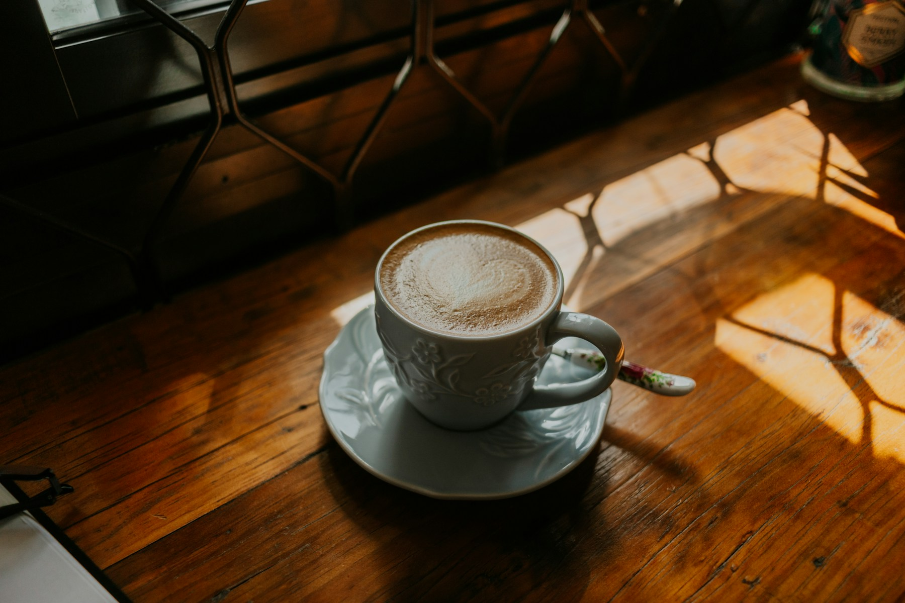
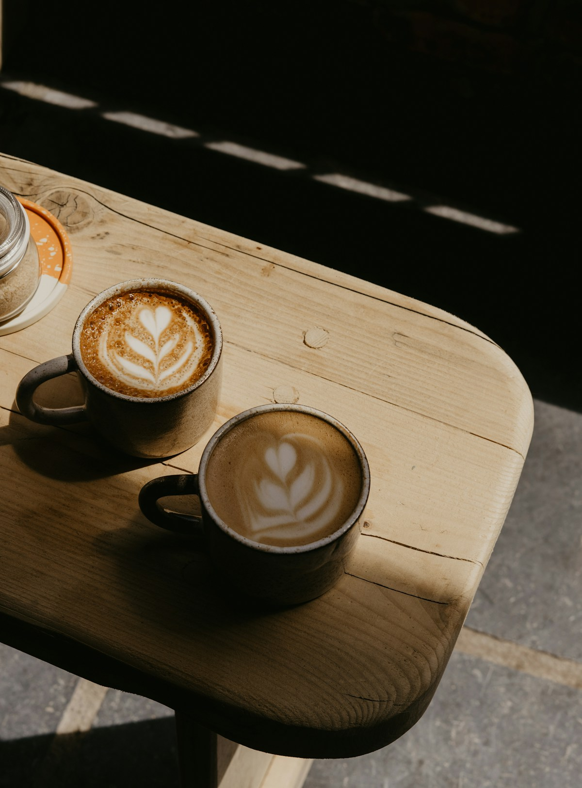

여백 크림 라테
깊고 고소한 에스프레소 위에
부드러운 수제 바닐라 크림을 올렸어요.
A LITTLE PAUSE, A GOOD CUP.
서두르지 않아도 괜찮아요.
잘 내린 커피 한 잔과 잠시 머무는 시간.
여기는, 오후의 여백입니다.

A CUP OF COFFEE. A MOMENT FOR YOU.

작은 순간이, 좋은 하루가 되도록.01 / OUR STORY
빼곡한 일정표에도 빈칸이 있으면 좋겠다고 생각했어요.
다 읽지 못한 책을 펼치거나, 창밖을 바라보거나,
그저 따뜻한 잔을 두 손으로 감싸는 시간처럼요.
오후의 여백은 그런 작은 틈에서 시작했습니다.
고소하게 볶은 원두와 매일 준비하는 작은 디저트,
그리고 당신의 속도를 재촉하지 않는 자리를 내어드려요.
커피는 정성껏, 시간은 느긋하게.
a little room for yourself.조금 느린 하루도,
충분히 좋은 하루.
03 / FIND YOUR PAUSE
혼자여도, 함께여도 좋은 자리.
가벼운 마음으로 들러주세요.
서울특별시 마포구 여백로 12, 1층조용한 골목, 초록색 문이 있는 작은 공간
수요일 — 월요일 11:00 — 20:00마지막 주문 19:30 · 매주 화요일 휴무
이 페이지는 가상의 카페를 소개하는 디자인입니다.
매장 주소와 운영 정보는 실제 정보가 아닙니다.